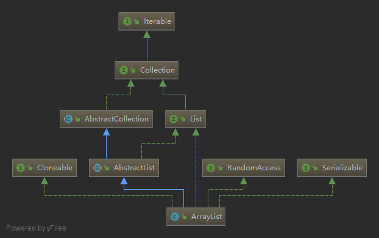
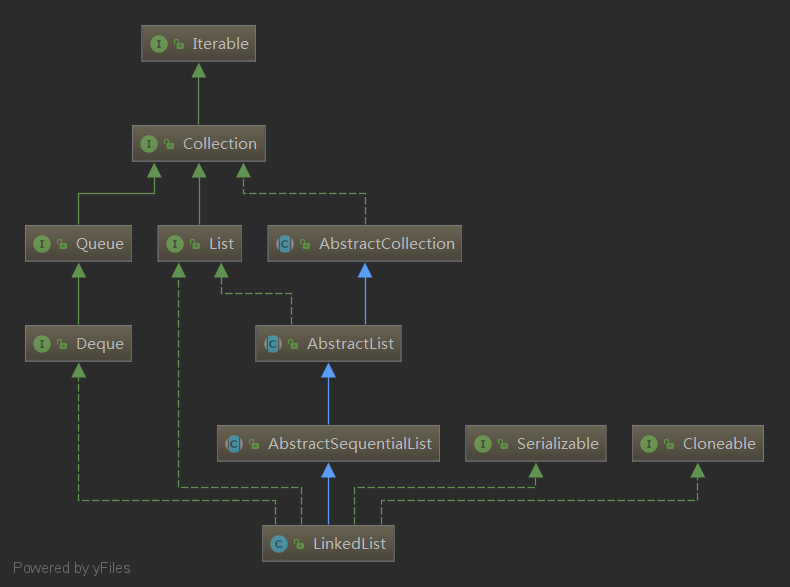

java中提供的List的实现主要有ArrayList、LinkedList、CopyOnWriteArrayList，另外还有两个古老的类Vector和Stack。
一、ArrayList 基础

ArrayList是一种以数组实现的List，与数组相比，它具有动态扩展的能力，因此也可称之为动态数组。
ArrayList实现了List，提供了基础的添加、删除、遍历等操作。
ArrayList实现了RandomAccess，提供了随机访问的能力。
ArrayList实现了Cloneable，可以被克隆。
ArrayList实现了Serializable，可以被序列化
二、LinkedList 基础

LinkedList是一个以双向链表实现的List，它除了作为List使用，还可以作为队列或者栈来使用。
LinkedList在功能上等于ArrayList + ArrayDeque。
通过继承体系，我们可以看到LinkedList不仅实现了List接口，还实现了Queue和Deque接口，所以它既能作为List使用，也能作为双端队列使用，当然也可以作为栈使用。
三、CopyOnWriteArrayList 基础
CopyOnWriteArrayList是ArrayList的线程安全版本，内部也是通过数组实现，每次对数组的修改都完全拷贝一份新的数组来修改，修改完了再替换掉老数组，这样保证了只阻塞写操作，不阻塞读操作，实现读写分离。
（1）CopyOnWriteArrayList使用ReentrantLock重入锁加锁，保证线程安全；
（2）CopyOnWriteArrayList的写操作都要先拷贝一份新数组，在新数组中做修改，修改完了再用新数组替换老数组，所以空间复杂度是O(n)，性能比较低下；
（3）CopyOnWriteArrayList的读操作支持随机访问，时间复杂度为O(1)；
（4）CopyOnWriteArrayList采用读写分离的思想，读操作不加锁，写操作加锁，且写操作占用较大内存空间，所以适用于读多写少的场合；
（5）CopyOnWriteArrayList只保证最终一致性，不保证实时一致性；
四、List 相关问题
1. ArrayList和LinkedList有什么区别？
| 类别 | ArrayList | LinkedList |
|---|---|---|
| 实现方式 | 底层是数组，基于索引的数据接口 | 底层是双向链表 |
| 随机访问 | 随机访问速度快（O(1)） | 不支持随机访问 |
| 插入/删除 | 需要考虑改变数组大小，扩容时需要复制数组到新数组，需要移动数组元素(O(n)) | 不需要改变数组大小 |
2. ArrayList是怎么扩容的？
（1）检查是否需要扩容；
（2）如果elementData等于DEFAULTCAPACITY_EMPTY_ELEMENTDATA(空数组)，则初始化容量大小为DEFAULT_CAPACITY(10)；
（3）新容量是老容量的1.5倍（oldCapacity + (oldCapacity >> 1)）；如果加了这么多容量发现比需要的容量还小，则以需要的容量为准；如果新容量已经超过最大容量了，则使用最大容量。
（4）创建新容量的数组并把老数组拷贝到新数组(Arrays.copyOf(elementData, newCapacity))；
3. ArrayList是怎么实现序列化和反序列化的？
1 | private void writeObject(java.io.ObjectOutputStream s) |
查看writeObject()方法可知，先调用s.defaultWriteObject()方法，再把size写入到流中，再把元素一个一个的写入到流中。
一般地，只要实现了Serializable接口即可自动序列化，writeObject()和readObject()是为了自己控制序列化的方式，这两个方法必须声明为private，在java.io.ObjectStreamClass#getPrivateMethod()方法中通过反射获取到writeObject()这个方法。
在ArrayList的writeObject()方法中先调用了s.defaultWriteObject()方法，这个方法是写入非static非transient的属性，在ArrayList中也就是size属性。同样地，在readObject()方法中先调用了s.defaultReadObject()方法解析出了size属性。
elementData定义为transient的优势，自己根据size序列化真实的元素，而不是根据数组的长度序列化元素，减少了空间占用。
4. 集合的方法toArray()有什么问题？
5. 什么是fail-fast？
fail-fast 机制，即快速失败机制，是java集合(Collection)中的一种错误检测机制。当在迭代集合的过程中该集合在结构上发生改变的时候，就有可能会发生fail-fast，即抛出ConcurrentModificationException异常。fail-fast机制并不保证在不同步的修改下一定会抛出异常，它只是尽最大努力去抛出，所以这种机制一般仅用于检测bug。
6.CopyOnWriteArrayList是怎么保证并发安全的？
CopyOnWriteArrayList使用ReentrantLock重入锁加锁，保证线程安全；
7. CopyOnWriteArrayList的实现采用了什么思想？
CopyOnWriteArrayList采用读写分离的思想，读操作不加锁，写操作加锁，且写操作占用较大内存空间，所以适用于读多写少的场合；
8.CopyOnWriteArrayList是不是强一致性的？
不是，CopyOnWriteArrayList只保证最终一致性，不保证实时一致性；
9.CopyOnWriteArrayList为什么没有size属性？
因为每次修改都是拷贝一份正好可以存储目标个数元素的数组，所以不需要size属性了，数组的长度就是集合的大小，而不像ArrayList数组的长度实际是要大于集合的大小的。